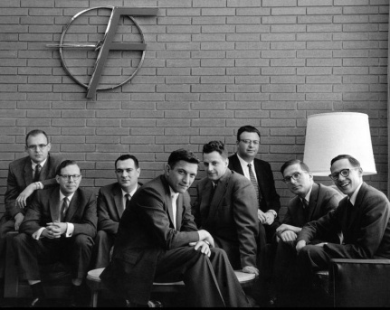

17
The 'traitorous eight' are eight men who left William Shockley's Shockley Semiconductor Laboratory to form their own company - Fairchild Semiconductor in 1957. Fairchild soon became an industry leader, and was directly involved in the founding of X. (by the two gentlemen sitting at first and fourth place from the left in this photo). Identify this contemporary IT giant and name these two men who founded it.
